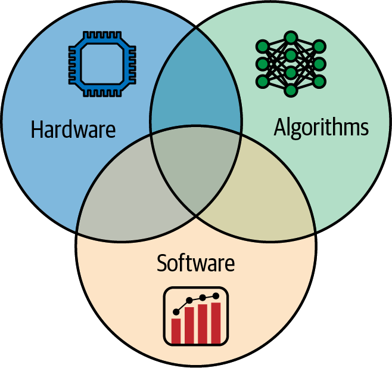
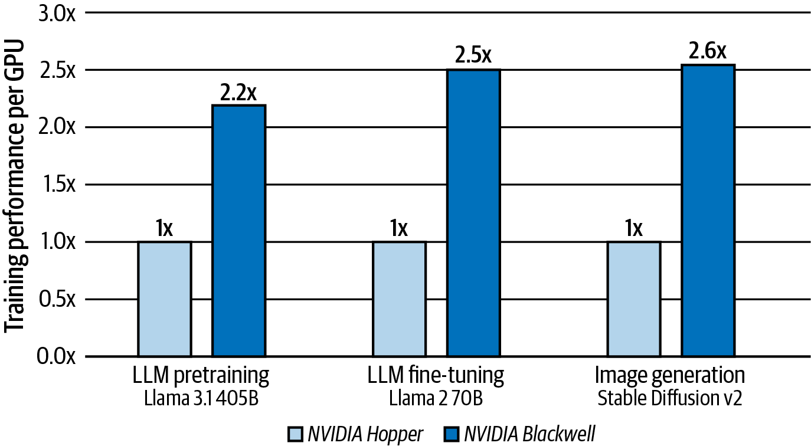
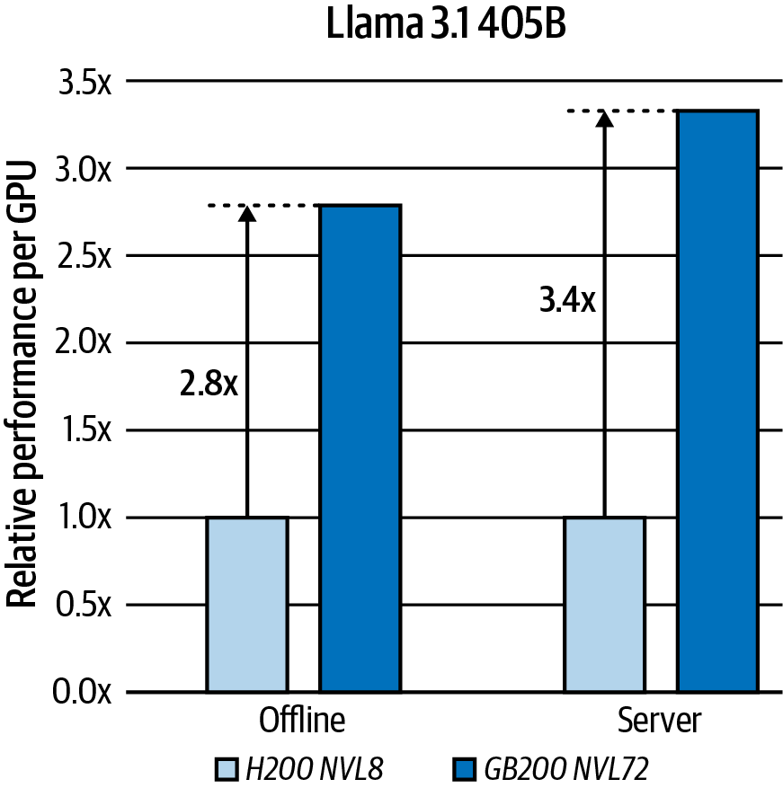
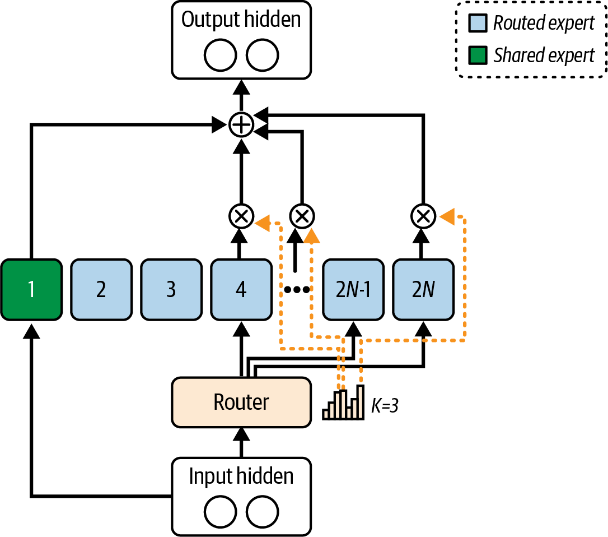

第 1 章 引言与 AI 系统概述 (Introduction and AI System Overview)¶
2024 年末，中国一家名为 DeepSeek.AI 的小型初创公司震惊了 AI 社区：他们在拿不到当时最先进的 NVIDIA GPU 的情况下，训练出了一个前沿大语言模型（LLM）。由于出口限制，DeepSeek 的工程师无法获得顶级的 NVIDIA Blackwell（B200、B300 等）或 Hopper（H100、H200 等）GPU，因此他们不得不使用当时本地可用的、符合出口合规要求的替代品，包括 NVIDIA H800 GPU。他们使用自定义核函数和高级优化技术（如模型蒸馏）从这些能力较弱的 GPU 中榨取最大性能。
In late 2024, a small startup in China called DeepSeek.AI stunned the AI community by training a frontier large language model (LLM) without access to the latest, state-of-the-art NVIDIA GPUs at the time. Due to export restrictions, DeepSeek's engineers could not obtain top-tier NVIDIA Blackwell (B200, B300, etc.) or Hopper (H100, H200, etc.) GPUs, so they resorted to locally available, export-compliant alternatives at the time, including the NVIDIA H800 GPU. They used custom kernels and advanced optimization techniques such as model distillation to squeeze out maximum performance from these less capable GPUs.
尽管有这些限制，DeepSeek.AI 仍训练出了 DeepSeek-R1，其推理能力已接近当时领先的前沿模型--那些模型是用当时最强大的 NVIDIA 芯片训练的。这个案例说明：精通 AI 系统性能工程的从业者和研究人员，无论受到何种约束，都能把手头的硬件用到极致。
Despite these limitations, DeepSeek.AI trained their DeepSeek-R1 model and achieved reasoning capabilities near the performance of leading frontier models that were trained on the most capable NVIDIA chips at the time. This case underscores that practitioners and researchers skilled in AI systems performance engineering can get the most out of their available hardware-no matter the constraints.
例如，DeepSeek 的工程师把通信带宽当作稀缺资源，对网络上传输的每一个字节都精打细算，最终在这套基础设施上实现了许多人认为不可能的目标。他们把工作负载横向扩展到数千块这样的受限 GPU--它们之间只用有限带宽的互连相连--凭借新颖的软件与算法优化克服了这些限制。
For example, DeepSeek's engineers treated communication bandwidth as a scarce resource, optimizing every byte over the wire to achieve what many thought impossible on that infrastructure. They scaled out to thousands of these constrained GPUs-connected with limited-bandwidth interconnects-using novel software and algorithmic optimizations to overcome these limitations.
将 DeepSeek 的方法与美国和欧洲最大的 AI 前沿实验室采用的"暴力"路径进行对比。这些实验室继续追求更大的计算集群和更大的模型。模型规模从数百万爆炸式增长到数十亿，现在达到数万亿参数。虽然每一轮 10 倍的规模增长都带来了质的能力跃升，但代价是巨大的成本与资源投入。
Contrast DeepSeek's approach with the "brute force" path taken by the largest AI frontier labs in the United States and Europe. These labs continue to pursue larger compute clusters and larger models. Model sizes have exploded from millions to billions and now to trillions of parameters. And while each 10x increase in scale has unlocked qualitatively new capabilities, they require tremendous cost and resources.
例如，据报道，训练 OpenAI 的 GPT-4（2023 年）花费了约 1 亿美元，而训练 Google 的 Gemini Ultra（2023 年末）估计高达约 1.91 亿美元。这说明随着模型规模和成本不断攀升，资源效率必须跟上。
For instance, training OpenAI's GPT-4 (2023) reportedly cost an estimated ~\(100 million, while training Google's Gemini Ultra (late 2023) is estimated at a staggering ~\)191 million. This demonstrates the need for resource efficiency going forward as these models scale up in size and cost.
DeepSeek 声称他们的 DeepSeek-R1 模型的训练计算成本不到 600 万美元--比 GPT-4 和 Gemini Ultra 等模型低一个数量级。同时，DeepSeek-R1 的性能与成本高出它数个数量级的竞争模型不相上下。
DeepSeek claims that their DeepSeek-R1 model was trained for less than $6 million in compute-an order of magnitude lower than models like GPT-4 and Gemini Ultra. At the same time, DeepSeek-R1 matches the performance of rival models that cost orders of magnitude more money.
关于这 600 万美元的说法是否属实、它究竟算入了什么（例如仅单次训练运行）、又排除了什么（例如实验与模型开发流程），外界存在一些质疑。即便如此，这则公告仍短暂地震动了美国金融市场：NVIDIA 股价应声在一天内下跌约 17%。市场担心的是，DeepSeek 的效率创新未来或许会降低对 NVIDIA 硬件的需求。这种反应虽然有些过度--NVIDIA 股价在随后的交易日中收复了失地--但它表明，AI 效率上的突破足以对全球金融市场产生重大的财务影响。
And while there is some doubt as to the validity of the $6 million claim-and what exactly it includes (e.g., just a single training run) or excludes (e.g., experimentation and the model-development pipeline)-the announcement briefly shocked the US financial markets, including NVIDIA's stock, which dropped ~17% in a single day based on this news. This was caused by concerns that DeepSeek's efficiency innovations would somehow require less NVIDIA hardware in the future. While this market reaction was a bit overblown-and NVIDIA stock recovered in subsequent trading sessions-it demonstrates the significant financial impact that breakthroughs in AI efficiency can have on global financial markets.
除模型训练外，DeepSeek 还在推理效率上取得了显著提升--手段是对当今大多数前沿 LLM 所采用的 transformer 架构做出巧妙的硬件感知算法改进。DeepSeek 清楚地证明了巧妙的 AI 系统性能工程优化可以颠覆超大规模 AI 模型训练和推理的经济学。这些优化将在本书其余部分中讨论。
Beyond model training, DeepSeek boasts significant inference efficiency gains through novel hardware-aware algorithmic improvements to the transformer architecture that powers most modern, frontier LLMs. DeepSeek has clearly demonstrated that clever AI systems performance engineering optimizations can upend the economics of ultrascale AI model training and inference. These optimizations are covered throughout the rest of the book.
核心认识其实很深刻：在这样的规模下，从系统中榨出的每一分性能，都可能转化为数百万甚至数十亿美元的节省；每消除一个瓶颈，都可能大幅改善训练吞吐量和推理延迟，进而降低成本、提升最终用户的满意度。简而言之，AI 系统性能工程不只是追求速度--它关乎把过去不可能的事变成可能，而且负担得起。
The takeaway is a profound realization that, at these scales, every bit of performance squeezed out of our systems could translate to millions, or even billions, of dollars saved. Every bottleneck eliminated can have an outsized impact on training throughput and inference latency. This, in turn, reduces cost and increases overall end-user happiness. In short, AI systems performance engineering isn't just about speed-it's about making the previously impossible both possible and affordable.
在本章中，我们将深入探讨 AI 系统性能工程师这一角色--它在大规模人工智能时代已经变得至关重要。本章将全面介绍这一职业的多方面职责，以及它对现代 AI 系统的关键影响。
In Chapter 1, we embark on an in-depth exploration of the AI systems performance engineer-a role that has become pivotal in the era of large-scale artificial intelligence. This chapter serves as a comprehensive guide to understanding the multifaceted responsibilities and the critical impact of this profession on modern AI systems.
我们首先追溯 AI 工作负载的演变，强调从传统计算范式到当代 AI 应用需求的转变。这一背景为理解 AI 中专门性能工程的必要性奠定了基础。
We begin by tracing the evolution of AI workloads, highlighting the transition from traditional computing paradigms to the demands of contemporary AI applications. This context sets the stage for appreciating the necessity of specialized performance engineering in AI.
随后，本章深入探讨 AI 系统性能工程师所需的核心能力：一是技术功底，包括对硬件架构、软件优化技术和系统级集成的深入理解；二是解决问题、沟通与协作等软技能--AI 项目天生跨学科，这些软技能同样不可或缺。
The chapter then dives into the core competencies required for an AI systems performance engineer. We examine the technical proficiencies essential for the role, including a deep understanding of hardware architectures, software optimization techniques, and system-level integration. Additionally, we discuss the importance of soft skills such as problem solving, communication, and collaboration, which are vital for navigating the interdisciplinary nature of AI projects.
本章有相当篇幅专门讨论这一角色的实践工作：性能工程师如何分析系统瓶颈、实施优化策略，并保障 AI 系统的可扩展性与可靠性。我们将用真实场景和案例研究来说明这些概念，给出在实际工作中遇到的挑战与解法的具体示例。
A significant portion of the chapter is dedicated to the practical aspects of the role. We explore how performance engineers analyze system bottlenecks, implement optimization strategies, and ensure the scalability and reliability of AI systems. Real-world scenarios and case studies are presented to illustrate these concepts, providing tangible examples of challenges and solutions encountered in the field.
此外，我们还会讨论性能工程师常用的工具与方法论，分享对性能测试、监控与基准测试实践的见解，包括对行业标准工具的概述，以及如何用它们评估和提升系统性能。
Furthermore, we discuss the tools and methodologies commonly employed by performance engineers, offering insights into performance testing, monitoring, and benchmarking practices. This includes an overview of industry-standard tools and how they are applied to assess and enhance system performance.
读完本章，读者将全面了解 AI 系统性能工程师的角色、胜任这一职位所需的技能，以及性能工程对 AI 系统成功部署与运营的关键意义。这些基础知识为后续章节做好了铺垫--我们将在后续章节深入探讨衡量 AI 性能工程水准的具体方法、技术与最佳实践。
By the end of Chapter 1, readers will have a thorough understanding of the AI systems performance engineer's role, the skills required to excel in this position, and the critical importance of performance engineering in the successful deployment and operation of AI systems. This foundational knowledge sets the stage for the subsequent chapters, where we dive deeper into specific techniques, technologies, and best practices that define excellence in AI performance engineering.
1.1 AI 系统性能工程师 (The AI Systems Performance Engineer)¶
AI 系统性能工程师是一个专注于优化 AI 模型及其运行底层系统性能的专业角色。这些工程师要保证 AI 训练和推理管道又快、又省、又可靠、又高可用。规模越大，这个角色就越关键。
The AI systems performance engineer is a specialized role focused on optimizing the performance of AI models and the underlying systems they run on. These engineers ensure that AI training and inference pipelines are fast, cost-efficient, and performant-as well as reliable and highly available. As the scale increases, the AI systems performance engineer becomes even more critical.
AI 系统性能工程师拿着顶尖的薪酬--这是有充分理由的：我们的工作直接影响公司的利润底线。我们要在硬件、软件和算法之间融会贯通，既要理解底层操作系统、内存层次结构和网络基础知识，也要掌握 Python、C++ 等多种语言，还要熟悉 PyTorch、OpenAI 的 Triton、NVIDIA 的 Compute Unified Device Architecture（CUDA）等各类 AI 框架与库。
An AI systems performance engineer commands top salaries-and for very good reasons. Our work has a clear impact on the bottom line. We blend expertise across hardware, software, and algorithms. We must understand low-level OS considerations, memory hierarchies, networking fundamentals, and multiple languages like Python and C++, as well as different AI frameworks and libraries such as PyTorch, OpenAI's Triton, and NVIDIA's Compute Unified Device Architecture (CUDA).
在任何一天，AI 系统性能工程师可能正在检查底层 GPU 核函数效率、优化操作系统线程调度、分析内存访问模式、提高网络吞吐效率，或调试分布式训练算法。AI 系统性能工程师的主要职责包括基准测试、剖析、调试、优化、扩展和高效管理资源。性能工程师的专长可能各有侧重--硬件、软件或算法，也可能兼而有之--但关键在于这三者必须协同设计（见图 1-1）。因此，了解它们各自的权衡取舍以及彼此之间的影响会大有裨益。
On any given day, an AI systems performance engineer might be examining low-level GPU kernel efficiency, optimizing OS thread scheduling, analyzing memory access patterns, increasing network throughput efficiency, or debugging distributed training algorithms. Key responsibilities of an AI systems performance engineer include benchmarking, profiling, debugging, optimizing, scaling, and managing resources efficiently. And while performance engineers may specialize in a combination of hardware, software, and algorithms, the point is that these specializations need to be codesigned together (see Figure 1-1). As such, it's good to understand their trade-offs and how they affect one another.

图 1-1 协同设计硬件、软件和算法
Figure 1-1. Codesigning hardware, software, and algorithms
1.1.1 基准测试和剖析 (Benchmarking and Profiling)¶
基准测试和剖析涉及测量 AI 模型在各种工作负载（包括训练和推理）下的延迟、吞吐量、内存使用和其他性能指标。识别瓶颈需要反复、组合地使用 NVIDIA Nsight Systems、Nsight Compute 和 PyTorch profiler。把这些工具搭配起来，我们就能在技术栈的不同层级定位瓶颈、跟踪性能随时间的变化，持续改进 AI 系统的整体性能。还要建立自动化的性能测试，以便在开发周期早期就抓到回归（性能倒退）。
Benchmarking and profiling involve measuring latency, throughput, memory usage, and other performance metrics for AI models under various workloads, including training and inference. To identify bottlenecks, we must iteratively use NVIDIA Nsight Systems and NVIDIA Nsight Compute together with the PyTorch profiler. Combined, these tools help pinpoint bottlenecks and track performance over time at different levels of the stack as we continue to improve overall performance of our AI system. It's important to set up automated performance tests to catch regressions, reductions in performance, early in the development cycle.
调试与优化性能问题，意味着要把问题追到根因--可能是一段次优的 CUDA 核函数、一处不必要的通信开销，也可能是训练或推理工作负载中的不均衡。
Debugging and optimizing performance issues requires that we trace performance issues to their root cause, whether it's a suboptimal CUDA kernel, an unnecessary communication overhead, or an imbalance in our training or inference workload.
在一种情形下，我们可能想用更高效的矩阵运算，用上最新的 NVIDIA Transformer Engine（TE）硬件--它专为采用 transformer 架构的现代 LLM 优化过。在另一种情形下，我们可以为"易并行"（embarrassingly parallel）的推理工作负载配置更高程度的并行，以此改进软件框架。还有一种情形：改进 transformer 的注意力算法--做更好的内存管理，相对于 GPU 计算量减少 GPU RAM 的进出流量。
In one case, we may want to use more efficient matrix operations that take advantage of the latest NVIDIA Transformer Engine (TE) hardware optimized for modern LLMs that use the transformer architecture. In another case, we can improve the software framework by configuring a higher degree of parallelism for our "embarrassingly parallel" inference workload. In yet another case, we may try to improve the transformer's attention algorithm by implementing better memory management and reducing the amount of memory moved in and out of GPU RAM relative to the number of GPU computations required.
即使是微小的代码调整也能产生巨大的收益。例如，也许用 Python 编写的数据预处理步骤正在阻塞整个训练管道。你可以通过用 C++ 重新实现这段代码，或改用 NVIDIA cuPyNumeric（NumPy 的直接替代品）来消除该瓶颈，它可以将数组操作工作负载分布在 CPU 和 GPU 上。
Even minor code tweaks can produce major wins. For example, maybe a data preprocessing step written in Python is holding up an entire training pipeline. You can remove that bottleneck by reimplementing the code in C++ or use NVIDIA cuPyNumeric, a drop in NumPy replacement, that can distribute array-operation workloads across both CPUs and GPUs.
1.1.2 扩展分布式训练和推理 (Scaling Distributed Training and Inference)¶
把小型研究工作负载扩展到超大规模集群上的大型生产工作负载，意味着要保证从 8 块 GPU 扩展到 80,000 块 GPU 时，系统仍以最小的开销和效率损失完成扩展。这需要使用 NVIDIA Collective Communications Library（NCCL，发音为"nickel"）优化通信，用于训练运行中常见的分布式集合操作如 all-reduce。此外，NVIDIA Inference Xfer Library（NIXL）为分布式推理提供高吞吐量、低延迟的点对点数据移动，跨越 GPU 内存和存储层。这种通信可以在单个节点上的 GPU 之间或跨数千个节点进行。它们还优化了通信和集合聚合操作，如 all-reduce、all-to-all 和 all-gather，这些在模型训练和推理期间广泛使用。
Scaling small research workloads to larger production workloads on ultrascale clusters will ensure that as we move from 8 GPUs to 80,000 GPUs, the system will scale with minimal overhead and loss of efficiency. This requires optimizing communication using NVIDIA Collective Communications Library (NCCL, pronounced "nickel") for distributed collectives like all-reduce commonly seen in training runs. In addition, the NVIDIA Inference Xfer Library (NIXL) provides high throughput, low latency, and point-to-point data movement across GPU memory and storage tiers for distributed inference. This communication can be between GPUs either on a single node or across thousands of nodes. They also optimize communication and collective aggregation operations like all-reduce, all-to-all, and all-gather, which are used extensively during model training and inference.
你可能需要巧妙地跨节点摆放数据，用上数据并行、张量并行和流水线并行。或者你可能需要重新设计工作负载以使用张量并行性或流水线并行性，因为模型太大而无法放入单个 GPU。也许你正在使用混合专家（MoE）模型，可以利用专家并行性。
You may want to place data cleverly across nodes using data, tensor, and pipeline parallelism. Or you may need to redesign the workload to use tensor parallelism or pipeline parallelism because the model is so large that it doesn't fit onto a single GPU. Perhaps you are using a mixture of experts (MoE) model and can take advantage of expert parallelism.
1.1.3 高效管理资源 (Managing Resources Efficiently)¶
优化模型如何利用 CPU 核心、GPU 内存、互连带宽和存储 I/O 等资源非常重要。这可能涉及大量工作：确保 GPU 全速"吃"到数据、把线程绑定到特定 CPU 核心、减少上下文切换开销、统筹内存使用，以及在训练和推理大模型时避免 GPU 内存不足（OOM）错误。像 GPU 虚拟化（例如 NVIDIA 的 Multi-Instance GPU [MIG]）这类技术，可以在作业用不满整块 GPU 时对 GPU 资源做切分，从而获得更高的整体利用率。
It's important to optimize how models utilize resources like CPU cores, GPU memory, interconnect bandwidth, and storage I/O. This can involve many efforts such as ensuring GPUs are fed with data at full throttle, pinning threads on specific CPU cores, reducing context-switch overhead, orchestrating memory usage, and avoiding out-of-memory (OOM) errors on GPUs when training and inferencing with large models. Techniques like GPU virtualization (e.g., NVIDIA's Multi-Instance GPU [MIG]) can partition GPU resources for better overall utilization when full GPU power isn't needed for a job.
1.1.4 跨团队协作 (Cross-Team Collaboration)¶
跨团队协作对 AI 系统性能工程师来说绝对至关重要。与研究人员、数据科学家和应用开发人员以及基础设施团队（包括网络和存储）密切合作非常重要。
Cross-team collaboration is absolutely critical for AI systems performance engineers. It's important to work hand in hand with researchers, data scientists, and application developers-as well as infrastructure teams, including networking and storage.
提升性能可能需要改动模型代码，这就得和研究团队协调；也可能只需部署新版 GPU 驱动来提高效率，而这又要经过基础设施团队。通常，性能改进跨越多个团队。例如，更新 CUDA 驱动程序或 CUDA 版本以修复错误和提高效率将涉及与 DevOps、基础设施和支持团队的仔细协调。改进模型代码以提高性能涉及与研究人员的密切合作。性能工程师位于这些多学科领域的交叉点，说着 AI、计算机科学和系统工程的语言。
Improving performance might require modifying model code, which involves coordination with researchers. Or you may want to deploy a new GPU driver to improve efficiency, which requires the infrastructure team. Often, performance improvements span multiple teams. For instance, updating the CUDA driver or CUDA version for bug fixes and efficiency will involve careful coordination with DevOps, infrastructure, and support teams. And improving model code for performance involves close work with researchers. The performance engineer sits at the intersection of these multidisciplinary domains and speaks the language of AI, computer science, and systems engineering.
1.2 透明度和可重复性 (Transparency and Reproducibility)¶
在性能工程中，凡事都要测量，要信数据而不是凭假设。把你的工作公开发表出来，别人才能学习、复现，并在你的发现之上继续建设。
In performance engineering, it's vital to measure everything and trust data, not assumptions. By publishing your work, others can learn, reproduce, and build upon your findings.
DeepSeek 故事的一个显著特点是他们如何公开分享基础设施优化。在 2025 年 2 月的 DeepSeek 开源周期间，他们发布了一套开源 GitHub 仓库，包括 FlashMLA、DeepGEMM、DeepEP、专家并行负载均衡器（EPLB）、DualPipe 和 Fire-Flyer 文件系统（3FS）。每个项目都经过生产测试，旨在从硬件中榨取最大性能。这些项目在 DeepSeek-V3 技术报告中有所描述。
One notable aspect of DeepSeek's story is how openly they shared their infrastructure optimizations. During DeepSeek's Open-Source Week in February 2025, they released a suite of open source GitHub repositories, including FlashMLA, DeepGEMM, DeepEP, expert parallelism load balancer (EPLB), DualPipe, and Fire-Flyer File System (3FS). Each project was production-tested and aimed at squeezing the most performance from their hardware. These projects are described in the DeepSeek-V3 Technical Report.
FlashMLA 是他们用 CUDA C++编写的优化注意力核函数。DeepGEMM 提供了一个 FP8 优化的矩阵乘法库，据报道在密集和稀疏操作上都优于许多供应商核函数。Deep Experts Parallelism（DeepEP）是他们为混合专家（MoE）模型高度调优的通信库。EPLB 实现了冗余专家策略，把负载过重的专家复制若干份来分担流量。DualPipe 是一种双向流水线并行算法，重叠前向/后向计算和通信阶段以减少流水线气泡。3FS 是他们的高性能分布式文件系统，提醒我们需要优化每一层--包括文件系统--以从 AI 系统中获得最大性能。
FlashMLA is their optimized attention kernel written in CUDA C++. DeepGEMM provides an FP8-optimized matrix multiplication library that reportedly outperforms many vendor kernels on both dense and sparse operations. Deep Experts Parallelism (DeepEP) is their highly tuned communication library for mixture-of-experts (MoE) models. EPLB implements a redundant expert strategy that duplicates heavily loaded experts to handle the additional load. DualPipe is a bidirectional pipeline parallelism algorithm that overlaps the forward/backward computation and communication phases to reduce pipeline bubbles. And 3FS is their high-performance distributed filesystem, reminding us that every layer needs to be optimized-including the filesystem-to get the most performance out of our AI system.
借 2025 年 2 月"开源周"之机在 GitHub 上开源这些项目，DeepSeek 既回馈了社区，也让别人得以复现他们的结果，从而证明其说法可信。这种透明做法使其他开发者能够对他们的方法做基准测试、复现和学习--包括用 DeepEP/DualPipe 的流水线并行来重叠通信，以及用 3FS 把 NVMe SSD/RDMA 带宽打满。
By open sourcing these projects on GitHub during their February 2025 "Open-Source Week," DeepSeek not only demonstrated the credibility of their claims by allowing others to reproduce their results but also contributed back to the community. This transparency allows other developers to benchmark, reproduce, and learn from their methods, including overlapping communication with DeepEP/DualPipe pipeline parallelism and saturating NVMe SSD/RDMA bandwidth with 3FS.
像 DeepSeek 的 Open Infra Index 这样的开放努力提供了有价值的基线和工具。它们提供各种 AI 硬件设置的真实性能测量，并鼓励同类比较和可重复性。同样，MLPerf 开放基准测试套件提供了一个标准，用于可重复地比较不同硬件和软件设置的训练和推理性能。
Open efforts like DeepSeek's Open Infra Index provide valuable baselines and tools. They provide real-world performance measurements on various AI hardware setups and encourage apples-to-apples comparisons and reproducibility. Similarly, the MLPerf open benchmark suite provides a standard for reproducibly comparing training and inference performance across hardware and software setups.
MLPerf 等行业基准测试已经量化了跨硬件代的这些协同设计优化。在 MLPerf Training v5.0（2025）中，基于 Blackwell 的 NVIDIA GB200 NVL72 系统在每个 GPU 上的训练吞吐量比等效的 Hopper 系统高出 2.6 倍，如图 1-2 所示。在 MLPerf Inference v5.0（2025）中，Blackwell NVL72 由于更高的单 GPU 性能和更大的 NVLink 域，在每个 GPU 上的推理吞吐量比等效的 Hopper 集群高出约 3.4 倍。这些结果如图 1-3 所示。
Industry benchmarks such as MLPerf have quantified these kinds of codesigned optimizations across hardware generations. In MLPerf Training v5.0 (2025), a Blackwell-based NVIDIA GB200 NVL72 system produced up to 2.6x higher training throughput per GPU over an equivalent Hopper system, as shown in Figure 1-2. In MLPerf Inference v5.0 (2025), the Blackwell NVL72 achieved about 3.4x higher inference throughput per GPU over an equivalent Hopper cluster due to higher per-GPU performance and the much larger NVLink domain. These results are shown in Figure 1-3.

图 1-2 NVIDIA GB200 NVL72 在 MLPerf Training v5.0 中相对于等效 NVIDIA Hopper 集群的每 GPU 吞吐量提升（来源：https://oreil.ly/Ao1l8）
Figure 1-2. NVIDIA GB200 NVL72 MLPerf Training v5.0 per-GPU throughput improvement over an equivalent NVIDIA Hopper cluster (source: https://oreil.ly/Ao1l8)

图 1-3 NVIDIA GB200 NVL72 在 MLPerf Inference v5.0 中相对于等效 NVIDIA Hopper 集群的每 GPU 吞吐量提升（来源：https://oreil.ly/V-jze）
Figure 1-3. NVIDIA GB200 NVL72 MLPerf Inference v5.0 per-GPU throughput improvement over an equivalent NVIDIA Hopper cluster (source: https://oreil.ly/V-jze)
引用 MLPerf 结果时请注意 MLPerf 自己的提醒：每 GPU 结果并不是跨平台比较的主要指标。正确的比较基准是系统级的端到端吞吐量；每 GPU 数字只能作为组件级参考。
When we cite MLPerf results, remember that MLPerf cautions that per-GPU results are not a primary metric across platforms. Use system-level, end-to-end throughput as the correct basis for comparison. Consider per-GPU numbers only as component-level indicators.
在后面的章节中，我们将引用其中一些开放基准测试来支持各种性能调优概念。例如，在讨论 GPU 核函数优化时，我们将引用 DeepSeek 发布的剖析，展示他们的自定义核函数如何在 NVIDIA GPU 上实现接近峰值的内存带宽利用率。
In later chapters, we'll reference some of these open benchmarks to support various performance tuning concepts. For instance, when discussing GPU kernel optimizations, we will reference DeepSeek's published profiles showing how their custom kernels achieved near-peak memory bandwidth utilization on NVIDIA GPUs.
实验的透明与可重复，是推动 AI 性能工程这个领域前进的关键。人很容易掉进"凭感觉优化"的陷阱（"我们做了 X，感觉变快了"）。我提倡的做法是严谨的科学方法：提出假设，用可复现的基准测试测量结果，再针对结果做调整、重跑基准，并在每一步公开所有结果。
Experimental transparency and reproducibility are critical in moving the field of AI performance engineering forward. It's easy to fall into the trap of anecdotal "vibe" optimizations ("We did X and things felt faster"). Instead, I'm advocating for a rigorous, scientific approach that develops hypotheses, measures the results with reproducible benchmarks, adjusts to improve the results, reruns the benchmarks, and shares all of the results at every step.
1.3 DeepSeek 在中国顶住美国出口硬件限制扩展至约 6800 亿参数模型 (DeepSeek Scales to ~680-Billion Parameter Models Despite US Export Hardware Restrictions in China)¶
有时系统性能创新源于必要性。如前所述，由于美国出口限制，DeepSeek 被迫只能使用 NVIDIA 的 H800 GPU。H800 是 Hopper GPU 的出口合规版本。与 H100 相比，它的 NVLink 互连带宽和 FP64 性能都被削减了，HBM 容量和带宽则大体保留。
Sometimes systems-performance innovations are born from necessity. As mentioned, DeepSeek found itself constrained to using only NVIDIA's H800 GPUs due to US export restrictions. The H800 is an export-compliant variant of the Hopper GPU. Compared to the H100, it reduces NVLink interconnect bandwidth and FP64 performance while keeping HBM capacity and bandwidth largely similar.
作为参考，NVIDIA H100 提供约 900 GB/s 的每 GPU NVLink 互连带宽，而 H800 提供约 400 GB/s 的每 GPU 带宽。这使 GPU 间数据传输更慢，最终限制了多 GPU 可扩展性。此外，虽然 H100 提供 3.35 TB/s 的内存带宽，但 H800 的有限吞吐量意味着数据传输要慢得多。这很容易成为分布式训练作业的瓶颈，拖累扩展效率。
For context, an NVIDIA H100 provides about 900 GB/s NVLink interconnect bandwidth per GPU, while H800 provides about 400 GB/s bandwidth per GPU. This makes inter-GPU data transfers slower and ultimately limits multi-GPU scalability. Additionally, while the H100 offers 3.35 TB/s of memory bandwidth, the H800's limited throughput means that data transfers are much slower. This threatens to bottleneck distributed training jobs and limit scalability efficiency.
就在这样严苛受限的环境下，DeepSeek 着手训练一个拥有约 6800 亿参数的巨型 MoE 语言模型--DeepSeek-V3。这个 MoE 模型每个输入 token 只使用约 370 亿活跃参数--而不是一次使用全部约 6800 亿参数。
DeepSeek set out to train a massive ~680-billion-parameter MoE language model, called DeepSeek-V3, in this heavily constrained environment. This MoE model uses only about 37 billion active parameters per input token-rather than all ~680 billion at once.
这种架构在任何时刻只激活模型的一小部分，从而把计算量控制在可承受的范围内--即便用的是紧凑的 H800 配置。具体来说，对于每个 token，DeepSeek-V3 使用 1 个共享专家加上 8 个路由选择的专家（从 256 个专家中选出），每个 token 总共 9 个活跃专家，如图 1-4 所示。
With this architecture, only a fraction of the model is activated at any given time. This helps manage computational load-even with the compact H800 setup. Specifically, for each token, DeepSeek-V3 uses 1 shared expert plus 8 router-selected experts (out of 256 experts) for a total of 9 active experts per token, as shown in Figure 1-4.

图 1-4 DeepSeek-V3 的专家路由
Figure 1-4. DeepSeek-V3's expert routing
我们将在接下来的章节中更详细地介绍 MoE。但只需知道，为了克服环境限制，DeepSeek 实现了一种新颖的 DualPipe 并行算法，精心重叠计算和通信以掩盖 H800 的固有弱点。
We'll cover MoEs in more detail in the upcoming chapters. But just know that, to work around the environment limitations, DeepSeek implemented a novel DualPipe parallelism algorithm that carefully overlaps computation and communication to mask the H800's inherent weaknesses.
通过设计自定义 CUDA 核函数来绕过一些默认的 NCCL 通信集合操作，DeepSeek 能够协调数据传输与正在进行的计算。得益于此，尽管互连带宽打了折扣，GPU 仍能保持很高的利用率。这种通信/计算重叠是我们将在本书其余部分反复讨论的主题。
By designing custom CUDA kernels to bypass some of the default NCCL communication collectives, DeepSeek was able to coordinate data transfers in tandem with ongoing computations. This keeps the GPUs efficiently utilized despite their reduced interconnect bandwidth. This kind of communication/computation overlap is a theme we will revisit throughout the rest of the book.
这种创新工程取得了成效，DeepSeek-V3 的训练完成所用的 GPU 时间（和成本）仅为 OpenAI、Meta、DeepMind 等公司类似规模前沿模型的一小部分。换句话说，他们动用的资源只有许多人设想的零头--而在人们的想象中，训练这种规模的模型需要更强大的集群。
This innovative engineering paid off, as DeepSeek-V3 was trained to completion at a fraction of the GPU time (and cost) of similarly sized frontier models from OpenAI, Meta, DeepMind, and others. This is a fraction of the resources that many assumed were necessary to train a model of this scale using a more capable cluster.
DeepSeek 报告称，V3 在多个标准化基准测试上的性能接近 GPT-4，包括语言理解、阅读理解和推理。它甚至在一些测试中匹配或略微超过 GPT-4。这些比较基于行业使用的标准化测试。这说明，一个开放的 MoE 模型完全能与最强的闭源模型抗衡--哪怕用的是较弱一代的硬件。
DeepSeek reports that V3's performance approaches GPT-4's on several standardized benchmarks, including language understanding, reading comprehension, and reasoning. It even matches or slightly exceeds GPT-4 on some tests. These comparisons were based on standardized tests used across the industry. This implies that an open MoE model can rival the best closed models-despite using less capable hardware.
在 DeepSeek-V3 模型的基础上，团队随后创建了 DeepSeek-R1，这是其专门的推理模型，类似于 OpenAI 的 o1 和 o3 系列推理模型。DeepSeek 没有严重依赖昂贵的人类反馈循环进行微调，而是开创了一种"冷启动"策略，使用最少的监督数据，转而强调强化学习技术将链式思维推理直接嵌入 R1。这条路子降低了训练成本、缩短了训练时间，也生动地说明：聪明的软件与算法设计可以跨越硬件瓶颈。
Building on the DeepSeek-V3 model, the team then created DeepSeek-R1, which is its specialized reasoning model built similarly to OpenAI's o1 and o3 series of reasoning models. Instead of relying heavily on costly human feedback loops for fine-tuning, DeepSeek pioneered a "cold start" strategy that used minimal supervised data, instead emphasizing reinforcement learning techniques to embed chain-of-thought reasoning directly into R1. This approach reduced training cost and time and underscored that smart software and algorithm design can overcome hardware bottlenecks.
经验教训在于：即便内存和算力预算有限，大型的稀疏激活 MoE 模型依然可以有效扩展。新颖的训练调度和低级通信/计算重叠优化可以克服硬件限制，正如 DeepSeek 努力的巨大投资回报（ROI）所证明的那样。
The lessons learned are that large, sparsely activated MoE models can be effectively scaled even on limited memory and compute budgets. Novel training schedules and low-level communication/computation overlap optimizations can overcome hardware limitations, as demonstrated by the enormous return on investment (ROI) of DeepSeek's efforts.
ROI 是显而易见的，因为 DeepSeek 的非传统方法带来了巨大的效率，并以更低的训练成本和时间创建了一系列强大的模型。通过从 NVIDIA 的 H800 GPU 中榨取每一分性能--即使在通信带宽降低的限制下--团队以减少数百万美元的成本提供了 GPT-4 级别的模型性能。此外，DeepSeek 在 R1 的推理微调阶段不需要那么多人类标注数据，从而节省了更多资金。
The ROI is clear, as DeepSeek's unconventional approach brought about huge efficiencies and created a series of powerful models at much lower training cost and time. By extracting every ounce of performance from NVIDIA's H800 GPU-even under the constraints of reduced communication bandwidth-the team delivered GPT-4-level model performance for millions of dollars less. Additionally, DeepSeek saved even more money by not requiring as much human-labeled data during R1's fine-tuning stage for reasoning.
简而言之，聪明的软件与算法设计胜过了靠硬件硬堆的老路，让 DeepSeek 在很紧的成本与硬件预算下做出了大规模 AI 模型。
In short, smart software and algorithm design overcame brute-force hardware limitations. This enabled DeepSeek to develop large-scale AI models on a tight cost and hardware budget.
1.4 迈向 100 万亿参数模型 (Toward 100-Trillion-Parameter Models)¶
100 万亿参数模型是 AI 的一个理想里程碑，经常与人脑新皮层中估计的 100 万亿突触连接相比较。每个突触连接相当于一个模型参数。实现这种规模的模型在理论上是可能的，但它需要大量的资源--和金钱。靠蛮力硬堆到 100 万亿参数，对几乎所有组织都不现实--除非是最富的那几家。
100-trillion-parameter models are an aspirational milestone for AI and are often compared against the estimated 100 trillion synaptic connections in the human neocortex. Each synaptic connection is equivalent to a model parameter. Achieving a model of this size is theoretically possible, but it demands an extraordinary amount of resources-and money. Scaling to 100-trillion-parameter models by brute force would be impractical for all but the absolute wealthiest organizations.
粗略估计，在约 29 万亿 token 上训练的密集 100 万亿参数模型需要约 1.2 x 10²⁹次浮点运算（FLOPS）。更大的 token 数量会线性扩展这个数字，而使用稀疏（MoE）模型可以减少有效计算量。然而，即使有稀疏性，这也表明仅靠暴力不足以满足超大规模模型的计算需求。需要新方法使 100 万亿参数训练在合理时间内可行。实现这种规模需要在硬件、软件和算法协同设计方面取得突破性效率--而不是仅仅继续扩展现有方法。
As a rough order of magnitude, a dense 100-trillion-parameter model trained on about 29 trillion tokens would require on the order of 1.2 x 10²⁹ floating point operations (FLOPS). Larger token counts scale this linearly, while using sparse (MoE) models can reduce the effective compute. However, even with sparsity, this demonstrates that mere brute force is not enough to satisfy the compute needs of ultrascale models. New approaches are needed to make 100-trillion-parameter training feasible in a reasonable amount of time. Achieving this kind of scale requires breakthrough efficiencies in hardware, software, and algorithms codesign-rather than just continuing to scale out current methods.
虽然本书讨论的优化可以应用于较小的模型和集群规模，但我会反复回到 100 万亿参数模型这个话题，就是想强调：扩展问题不能只靠砸硬件。我们需要与硬件协同设计的巧妙软件和算法创新，包括计算、网络、内存和存储。
While the optimizations discussed in this book can be applied to smaller models and cluster sizes, I will continue to revisit the 100-trillion-parameter model to enforce the idea that we can't just throw hardware at the scaling problem. We need clever software and algorithmic innovations that are codesigned with hardware, including compute, networking, memory, and storage.
这种训练成本的爆炸式增长正在推动寻找新的 AI 系统和软件工程技术，以提高性能、降低成本，并使极限规模 AI 在有限的计算资源、功率限制和资金下可行。研究人员则一直在探索各种新技术，设法降低有效计算需求。
Such explosive growth in training cost is driving a search for new AI systems and software engineering techniques to increase performance, reduce cost, and make extreme-scale AI feasible with limited compute resources, power constraints, and money. Researchers are always exploring novel techniques to reduce the effective compute requirements.
一个突出的想法是使用稀疏性，特别是 MoE 模型。以 MoE 为代表的稀疏模型，与传统的密集模型形成了鲜明对照--后者正是 OpenAI 带火的那些常见 GPT 系列大语言模型（LLM）。事实上，有公开猜测认为一些前沿模型，如 OpenAI 专有的 GPT 系列和 o 系列推理模型，是基于 MoE 架构的。
One prominent idea is to use sparsity and, specifically, MoE models. Sparse models like MoEs are in contrast to traditional dense models like the common GPT-series large language models (LLMs) made popular by OpenAI. In fact, there is public speculation that some frontier models like OpenAI's proprietary GPT-series and o-series reasoning models are based on the MoE architecture.
像 MoE 这样的稀疏模型只激活每个输入 token 的部分模型。通过将每个输入 token 仅路由到其众多内部"专家"的一个子集，每个 token 的 FLOPS 大致保持不变，即使总参数增长。这类稀疏模型表明：扩展到数万亿参数，并不必然伴随计算成本的同步爆炸。此外，由于这些模型在推理期间使用较少的活跃参数，MoE 模型的请求-响应延迟通常比其密集等效模型低得多。这些是训练和服务 100 万亿参数规模模型的关键见解。
Sparse models like MoEs activate only parts of the model for each input token. By routing each input token through only a subset of its many internal "experts," the FLOPS per token stays roughly constant even as total parameters grow. Such sparse models prove that scaling to multi-trillion-parameter models is done without an equivalent explosion in computation cost. Additionally, since these models use fewer active parameters during inference, request-response latencies are typically much lower for MoE models compared to their dense equivalents. These are crucial insights toward training and serving 100-trillion-parameter-scale models.
DeepSeek-V3（基础模型）和-R1（基于强化学习的推理变体）是 MoE 效率的绝佳例子。它们包含约 6800 亿总参数，每个输入 token 约 370 亿活跃参数。DeepSeek 的技术报告和公开文章描述了一个 MoE，每个 token 有 1 个共享专家和从 256 个中选出的 8 个选定专家，这产生约 9 个活跃专家和每个 token 约 370 亿活跃参数。这使 DeepSeek-V3 和-R1 比类似规模的密集大语言模型更加资源高效。另一个例子是 Google 2021 年的 Switch Transformer MoE。这个 1.6 万亿参数的 MoE 模型仅用一小部分计算就达到了与密集模型相同的精度。它的训练速度比类似的密集方法快 7 倍。
DeepSeek-V3 (base model) and -R1 (reinforcement-learning-based reasoning variant) are great examples of MoE efficiency. They contain ~680 billion total parameters with about 37 billion active per input token. DeepSeek's technical report and public write-ups describe an MoE with 1 shared expert and 8 selected experts out of 256 per token, which yields about 9 active experts and roughly 37 billion active parameters per token. This makes DeepSeek-V3 and -R1 much more resource-efficient than similarly sized dense large language models. Another example is Google's Switch Transformer MoE from 2021. This 1.6-trillion-parameter MoE model achieved the same accuracy as a dense model with only a fraction of the computation. It was trained 7x faster than a comparable dense approach.
除了巨大的计算需求，内存也是一个主要瓶颈。例如，如果每个参数以 16 位（2 字节）精度存储，100 万亿参数模型需要约 182 TB 的 GPU 内存（182 TB = 100 万亿参数 x 每权重 16 位 x 每字节 8 位）来加载模型。这与单个 NVIDIA Blackwell B200 GPU 上的 192（180 可用）GB GPU RAM 相比是 3 个数量级（1000 倍）。
In addition to massive compute requirements, memory is also a major bottleneck. For example, a 100-trillion-parameter model would require approximately 182 TB of GPU memory (182 TB = 100 trillion parameters x 16 bits per weight x 8 bits per byte) to load the model if each parameter is stored in 16-bit (2-byte) precision. This is 3 orders of magnitude (1,000x) compared to the 192 (180 usable) GB of GPU RAM on a single NVIDIA Blackwell B200 GPU.
仅仅加载 100 万亿模型权重就需要近 1000 个 Blackwell B200 GPU（每个 192[180 可用]GB）--或 700 个 Blackwell Ultra B300 GPU（每个约 288 GB）。这个估计只是加载模型，不包括激活内存、优化器状态和推理输入。这些会进一步增加所需的总内存。
To simply load the 100-trillion model weights would require close to 1,000 Blackwell B200 GPUs (192 [180 usable] GB each)-or 700 Blackwell Ultra B300 GPUs (~288 GB each). And this estimate is just to load the model and does not include activation memory, optimizer states, and inference input. These would further increase the total memory required.
作为参考，典型的 B200 GPU 计算节点只包含 8 个 B200 GPU。要使用这些，你需要约 125 个 GPU 节点才能用 B200 加载模型，约 86 个 GPU 节点才能用 Ultra B300 GPU 计算节点集群加载模型（每个节点 8 个 B300 GPU）。
For context, a typical B200 GPU compute node contains just 8 B200 GPUs. To use these, you would require ~125 GPU nodes just to load the model with a B200, and ~86 GPU nodes to load the model with a cluster of Ultra B300 GPU compute nodes (8 B300 GPUs per node).
此外，光是喂饱训练数据就变得极其困难--要以足够快的速度供数据、让这成千上万块 GPU 都不空转，绝非易事。特别是，当 100 万亿参数模型被分区到 1000 个 B200 GPU 或 700 个 B300 GPU 上时，GPU 之间的通信开销会显著增加。训练单个模型可能消耗数百万 GPU 小时和兆瓦时的能源。这正是把集群扩展到足以训练和服务 100 万亿参数模型所需的巨大成本--以及能耗。
Additionally, loading training data also becomes extremely difficult since feeding such a model with data fast enough to keep all of those GPUs busy is nontrivial. In particular, communication overhead between the GPUs grows significantly as the 100-trillion-parameter model is partitioned across 1,000 B200 GPUs or 700 B300 GPUs. Training a single model could consume millions of GPU-hours and megawatt-hours of energy. This is an enormous amount of cost-and energy consumption-to scale out large enough to train and serve a 100-trillion-parameter model.
100 万亿参数的 AI 时代将迫使我们彻底重新思考系统设计--否则这种规模的训练和部署根本无从谈起。硬件、算法与软件都必须共同进化，才能迈入这一新前沿。
The era of 100-trillion-parameter AI will force us to completely rethink system design to make training and deployment practical at this scale. Hardware, algorithms, and software all need to coevolve to meet this new frontier.
1.5 NVIDIA 的"机架式 AI 超级计算机" (NVIDIA's "AI Supercomputer in a Rack")¶
为了应对超大规模计算的挑战，NVIDIA 构建了一类新的 AI 超级计算机，专门针对万亿参数规模的工作负载。例如 2024 年的 NVIDIA Grace Blackwell GB200 NVL72 和 GB300 NVL72 Ultra，后者使用每个 GPU 288 GB HBM3e 的 Blackwell Ultra GPU，并保持 72 个 GPU 的 NVLink 域，具有约 130 TB/s 的聚合带宽。Vera Rubin VR200（2026）和 Feynman（2028）系统延续了这种将艾级超级计算机压缩到单个数据中心机架的趋势。事实上，NVIDIA 将 NVL72 这样的机架系统称为"机架式 AI 超级计算机"--这是有充分理由的。
To meet the challenges of ultrascale computing, NVIDIA has built a new class of AI supercomputers specifically aimed at trillion-parameter-scale workloads. Some examples include the NVIDIA Grace Blackwell GB200 NVL72 in 2024 and the GB300 NVL72 Ultra, which uses Blackwell Ultra GPUs with 288 GB HBM3e per GPU and maintains a 72-GPU NVLink domain with about 130 terabytes per second aggregate bandwidth. Vera Rubin VR200 (2026) and Feynman (2028) systems continue this trend of exascale supercomputers condensed into a single data center rack. In fact, NVIDIA refers to these rack systems like NVL72 as "AI supercomputers in a rack"-and for good reason.
每个 GB200/GB300 NVL72 机架集成了 36 个 Grace Blackwell，通过 NVLink 与 NVSwitch 连接，提供机架级交换结构。每个 Grace Blackwell Superchip 是一个 NVIDIA Grace CPU（具有 72 个 CPU 核心）和两个 NVIDIA Blackwell GPU 的组合，总计 36 颗 Grace CPU 与 72 颗 Blackwell GPU--这正是"NVL72"中"72"的由来。
Each GB200/GB300 NVL72 rack integrates 36 Grace Blackwells connected through NVLink with NVSwitch, providing the rack scale switching fabric. Each Grace Blackwell Superchip is a combination of one NVIDIA Grace CPU (with 72 CPU cores) and two NVIDIA Blackwell GPUs for a total of 36 Grace CPUs and 72 Blackwell GPUs-hence, the "72" in the name "NVL72."
如果你还没猜到，NVL72 中的 NVL 代表 NVLink。这有助于提醒你该系统中的 GPU 是使用 NVLink 互连的。以防我们忘记！
If you haven't guessed already, the NVL in NVL72 stands for NVLink. This helps remind you that the GPUs in this system are interconnected using NVLink. Just in case we forget!
每个 Grace Blackwell 板使用 NVSwitch（机架上的 NVLink 交换网络）连接到其他板。这样，所有 72 个 GPU 可以以每 GPU 1.8 TB/s 双向的全 NVLink 5 带宽（18 x 100 GB/s 链路）相互通信。在整个机架上，NVLink 交换系统在一个 NVL72 域内提供约 130 TB/s 的 GPU 到 GPU 聚合带宽。
Each Grace Blackwell board connects to other boards using NVSwitch, the on-rack NVLink switch network. This way, all 72 GPUs can communicate with one another at full NVLink 5 bandwidth of 1.8 TB/s bidirectional per GPU (18 x 100 GB/s links). Across the rack, the NVLink Switch System provides about 130 TB/s aggregate GPU to GPU bandwidth within one NVL72 domain.
实际上，NVL72 的内部结构将所有 72 个 Grace Blackwell GPU 统一成一个高速集群。因此，像 PyTorch（用于训练）和 vLLM（用于推理）这样的框架可以使用单一 NVLink 域进行高效的数据张量流水线和专家并行。CUDA 统一内存可以在需要时通过 NVLink 迁移或远程访问页面。但要注意，远程内存的延迟和带宽与本地不同，必须按非均匀内存访问来对待。如果依赖 Grace 与 Blackwell 之间的托管分配，最好用 cudaMemPrefetchAsync 和 cudaMemAdvise 做显式预取，减少缺页停顿。
Effectively, the NVL72's internal fabric unifies all 72 Grace Blackwell GPUs into one high-speed cluster. As such, frameworks like PyTorch for training and vLLM for inference can use the single NVLink domain for efficient data tensor pipeline and expert parallelism. CUDA Unified Memory can migrate or remotely access pages across NVLink when needed. However, remote memory has distinct latency and bandwidth that should be treated as nonuniform. When relying on managed allocations across Grace and Blackwell, prefer explicit prefetch using cudaMemPrefetchAsync and cudaMemAdvise to reduce page-fault stalls.
一个完整的 GB200 NVL72 机架理论上可以达到约 1.44 exaFLOPS 的 FP4 性能（具有 2:1 结构化稀疏性）和约 720 petaFLOPS 的 FP8 性能（具有 2:1 结构化稀疏性）。它在 72 个 GPU 上提供约 13.5 TB（13,824 GB = 每 GPU 192 GB x 72 个 GPU）的 HBM3e，当计入同一 NVLink 域中的 Grace CPU 内存时，总共约 30 TB。
A full GB200 NVL72 rack can theoretically reach about 1.44 exaFLOPS for FP4 with 2 to 1 structured sparsity and about 720 petaFLOPS for FP8 with 2 to 1 structured sparsity. It provides roughly 13.5 TB (13,824 GB = 192 GB per GPU x 72 GPUs) of HBM3e across the 72 GPUs and around 30 TB total when counting Grace CPU memory in the same NVLink domain.
NVLink 提供跨 72 个 GPU 的池化访问，CUDA 统一内存可以通过 NVLink 迁移或远程访问页面，但远程访问具有不同的性能，机架不会表现为单一的统一内存设备。
NVLink provides pooled access across the 72 GPUs, and CUDA Unified Memory can migrate or remotely access pages over NVLink, but remote access has different performance, and the rack does not behave as a single uniform memory device.
简而言之，GB200 NVL72 是一个独立的 72 GPU、1.44 exaFLOPS、30 TB 内存系统，机架功率约 120 到 132 kW，具体取决于供应商配置和冷却。它确实是一台可以在单个机架中训练和服务万亿参数模型的 AI 超级计算机。
In short, the GB200 NVL72 is a self-contained 72 GPU 1.44 exaFLOPS 30 TB memory system with about 120 to 132 kW rack power, depending on vendor configuration and cooling. It's truly an AI supercomputer that can train and serve multi-trillion-parameter models in a single rack.
通过组合这些机架形成超大规模集群，你可以支持大规模的万亿参数模型。更好的是，你可以使用你喜欢的云提供商（包括 Amazon Web Services（AWS）、Google Cloud Platform（GCP）、Microsoft Azure、CoreWeave、Lambda Labs 等）通过几次点击（和相当多的美元！）来配置这些机架和机架集群。
By combining these racks to form ultrascale clusters, you can support massive multi-trillion-parameter models. Even better, you can provision these racks and rack clusters with a few clicks (and quite a few dollars!) using your favorite cloud provider, including Amazon Web Services (AWS), Google Cloud Platform (GCP), Microsoft Azure, CoreWeave, Lambda Labs, and many others.
虽然本书重点关注 NVIDIA 芯片的 Grace Blackwell 一代，但讨论的优化原则源自 NVIDIA 硬件的许多前代产品。而且这些优化将继续适用于并演进到未来的许多 NVIDIA 芯片代，包括 Vera Rubin（2026）、Feynman（2028）及以后。这个路线图延续了每一代新 GPU 性能、内存和集成度翻倍的模式。
While this book focuses heavily on the Grace Blackwell generation of NVIDIA chips, the optimization principles discussed are derived from many previous generations of NVIDIA hardware. And these optimizations will continue to apply and evolve to many future NVIDIA chip generations to come, including Vera Rubin (2026), Feynman (2028), and beyond. This roadmap continues the pattern of doubling performance, memory, and integration with each new GPU generation.
在本书中，你将了解每一代在计算、内存、网络和存储方面的创新如何促进更多的 AI 扩展，形式包括超大规模集群、万亿参数模型、高吞吐量训练作业和极低延迟模型推理服务器。这些创新的背后是硬件感知算法在推动，而这些算法遵循的正是下一节要讨论的"机械同情"与硬件-软件协同设计原则。
Throughout the book, you will learn how each generation's innovation in compute, memory, networking, and storage will contribute to more AI scaling in the form of ultrascale clusters, multi-trillion-parameter models, high-throughput training jobs, and extreme-low-latency model inference servers. These innovations are fueled by hardware-aware algorithms that enforce the principles of mechanical sympathy and hardware-software codesign discussed in the next section.
1.6 机械同情：硬件-软件协同设计 (Mechanical Sympathy: Hardware-Software Codesign)¶
"机械同情"（mechanical sympathy）一词出自软件工程师 Martin Thompson，灵感来自英国一级方程式冠军 Jackie Stewart--后者对赛车的每一个机械细节都了然于胸。放到计算领域，它说的是：写出真正"懂得"自己所运行硬件的软件。在 AI 语境下，它意味着让算法与硬件能力协同设计，把性能榨到极限。
Mechanical sympathy is a term originally coined by software engineer Martin Thompson, who was drawing an analogy to the British Formula One champion Jackie Stewart, who intimately understood his cars' mechanical details. In computing, it refers to writing software that is deeply aware of the hardware it runs on. In the AI context, it means codesigning algorithms hand in hand with hardware capabilities to maximize performance.
现实世界的经验表明，即使对 GPU 核函数或内存访问模式进行微小的调整也能产生巨大的收益。一个典型的例子是 FlashAttention，这是一种以硬件感知方式重新实现 transformer 注意力机制的新颖算法。
Real-world experience has shown that even minor tweaks in GPU kernels or memory access patterns can produce outsized gains. A classic example is FlashAttention, a novel algorithm that reimplements the transformer attention mechanism in a hardware-aware way.
FlashAttention 对 GPU 计算进行"分块"，最大限度地减少向 GPU 内存发出的读写次数。FlashAttention 显著减少了内存移动并加速了注意力计算。用 FlashAttention 替换默认的 transformer 注意力机制/算法可以在长序列的训练和推理中产生 2-4 倍的加速，同时也减少了整体内存占用。
FlashAttention "tiles" GPU computations, which minimizes the number of reads and writes issued to the GPU's memory. FlashAttention significantly reduces memory movement and speeds up attention computation. Replacing the default transformer attention mechanism/algorithm with FlashAttention produces a 2x-4x speedup in training and inference for long sequences while also reducing the overall memory footprint.
这一改变，把曾经最大的瓶颈（注意力）压缩成了总运行时间中的很小一块。FlashAttention 几乎一夜之间成为许多库的默认选择，因为它让模型能够更快、更高效地处理更长的序列。自 FlashAttention 以来，出现了许多新的注意力算法，包括 DeepSeek 的多头潜在注意力（MLA）。
This kind of change reduces what used to be a major bottleneck (attention) down to a fraction of overall runtime. FlashAttention became the default in many libraries almost overnight because it let models handle longer sequences faster and more efficiently. Since FlashAttention, many new attention algorithms have emerged, including DeepSeek's Multi-Head Latent Attention (MLA).
DeepSeek 的 MLA 算法--作为 NVIDIA GPU 核函数实现并于 2025 年开源--是硬件-软件协同设计或机械同情的另一个例子。与 FlashAttention 类似，MLA 重构了注意力计算以更好地利用 NVIDIA 的内存层次结构和专用 GPU"Tensor Cores"。这些优化使 MLA 能够利用受限的 H800 GPU 架构，以一小部分成本实现更高的吞吐量--甚至超过了 FlashAttention 在相同 H800 系统上的性能。
DeepSeek's MLA algorithm-implemented as an NVIDIA GPU kernel and open sourced in 2025-is another example of hardware-software codesign, or mechanical sympathy. Similar to FlashAttention, MLA restructures the attention computations to better utilize NVIDIA's memory hierarchies and dedicated GPU "Tensor Cores." These optimizations allowed MLA to exploit the constrained H800 GPUs' architecture, achieving higher throughput at a fraction of the cost-surpassing even FlashAttention's performance on those same H800 systems.
从某种意义上说，整本书就是一份关于"机械同情"的研究案例集。我们将看到无数案例，其中新的硬件功能--或硬件限制，如 DeepSeek 的情况--激发了新颖的软件和算法技术。相反，我们将看到新的软件算法如何鼓励新的硬件创新。
This entire book is effectively a study in mechanical sympathy. We will see countless cases where new hardware features-or hardware constraints, as in the case of DeepSeek-inspire novel new software and algorithmic techniques. Conversely, we'll see where new software algorithms encourage new hardware innovations.
例如，transformer 模型的兴起和降低精度量化（如 FP8/FP4）促使 NVIDIA 添加了专门的硬件，如 Transformer Engine 和专用的降低精度 Tensor Core，用于更快的矩阵数学计算单元。这些硬件创新反过来又让研究者得以探索新的数值优化器和神经网络架构；这继而进一步倒逼硬件设计者，进而又解锁更新的算法，如此循环往复--这正是良性循环！
For instance, the rise of transformer models and reduced-precision quantization (e.g., FP8/FP4) led NVIDIA to add specialized hardware like the Transformer Engine and dedicated reduced-precision Tensor Cores for faster matrix-math computation units. These hardware innovations, in turn, enable researchers to explore novel numeric optimizers and neural-network architectures. This, then, pushes hardware designers even further, which then unlocks even newer algorithms, etc. It's a virtuous cycle!
现代 GPU 使用支持 FP4 和微缩放的最新 Transformer Engine。结合最新一代 NVLink，这些功能主要通过更快的 Tensor Core 数学运算、更高的内存带宽和改进的特殊功能单元（SFU）来提高注意力吞吐量。例如，指数运算单元就是专为加速 softmax 而设计的--transformer 注意力里大量用到 softmax；而对当今的 LLM 来说，注意力是命脉所在。随着 transformer 的普及，softmax 延迟一度成为前几代 GPU 的瓶颈，因为注意力机制绕不开它。
Modern GPUs use the latest Transformer Engine with FP4 support and microscaling. Combined with the latest generation NVLink, these features increase attention throughput primarily through faster Tensor Core math, higher memory bandwidth, and improved Special Function Units (SFUs.) For instance, the exponential computation unit is specifically designed to accelerate the softmax operation used heavily by the transformer's attention algorithm-a key part of today's LLM models. With the popularity of transformers, softmax latency had become a bottleneck on previous GPUs, given that it's critical to the transformer attention mechanism.
针对现代 GPU 改进特殊功能吞吐量和快速数学流水线--这就是"机械同情"与硬件-软件-算法协同设计最纯粹、最理想的形态，NVIDIA 正是这样做的。他们直接与研究人员和从业者合作，解决和减少在其硬件上运行的现代 LLM 算法（如注意力）的瓶颈。
By improving special function throughput and fast math pipelines with modern GPUs, NVIDIA demonstrates mechanical sympathy and hardware-software-algorithm codesign in its best and purest form. They work directly with researchers and practitioners to address and reduce the bottlenecks of modern LLM algorithms (e.g., attention) running on their hardware.
这种紧密的相互作用--GPU 和 AI 算法共同进化--是 AI 中机械同情的核心。这些协同设计创新只有在硬件公司（如 NVIDIA 和高级精简指令集机器[ARM]）、AI 研究实验室（如 OpenAI 和 Anthropic）和 AI 系统性能工程师（如我们！）之间的密切合作下才能实现。
This tight interplay-GPUs and AI algorithms coevolving-is the heart of mechanical sympathy in AI. These codesign innovations can happen only with close collaboration between the hardware companies (e.g., NVIDIA and Advanced RISC Machine [ARM]), AI research labs (e.g., OpenAI and Anthropic), and AI systems performance engineers (e.g., us!).
1.7 测量"Goodput"有效吞吐量 (Measuring "Goodput" Useful Throughput)¶
当运营数百、数千或数百万 GPU 的集群时，了解理论硬件能力中有多少实际执行有用工作非常重要。传统的吞吐量指标如 FLOPS 和设备利用率误导性地高，因为大部分时间可能花在停滞的通信、空闲计算或失败的作业重启上。"goodput"的概念正是由此而来--Meta 在 2025 年的一篇论文里把它表述为"有效训练时间比率"。
When operating clusters of hundreds, thousands, or millions of GPUs, it's important to understand how much of the theoretical hardware capability is actually performing useful work. Traditional throughput metrics like FLOPS and device utilization are misleadingly high, as much of the time is likely spent on stalled communication, idling computation, or failed job restarts. This is where the concept of "goodput" comes in-as described by Meta as "effective training-time ratio" in a 2025 paper.
NVIDIA 将理论硬件最大值称为"光速"（speed of light），正如你在 NVIDIA 博客、文档、网络研讨会和会议演讲中可能看到的那样。
NVIDIA calls the theoretical hardware maximum the speed of light, as you may have seen in NVIDIA blogs, documentation, webinars, and conference talks.
简单地说，goodput 衡量的是单位时间内真正完成的有用工作量（处理了多少 token、完成了多少推理请求）--把所有对训练或推理没有直接贡献的损耗都扣掉。说到底，它就是系统从"真正产出训练/推理成果"的角度看的端到端效率。Goodput 可以通过集群的最大可能吞吐量进行归一化，产生一个百分比效率值。
In simple terms, goodput measures the throughput of useful work completed (number of tokens processed or inference requests completed) per unit time-discounting everything that doesn't directly contribute to model training or inference. It's effectively the end-to-end efficiency of the system from the perspective of productive model training or inference. Goodput can then be normalized by the cluster's maximum possible throughput to produce a percent efficiency value.
例如，假设一个有 8 个 GPU 的节点可以在 10 秒内处理 100,000 个 token。在这种情况下，它的 goodput 是每秒 10,000 个 token。如果节点中的每个 GPU 可以达到每秒 1,500 个 token 的峰值理论吞吐量，或者所有 8 个 GPU 总共每秒 12,000 个 token，那么节点的效率是 83.3%（0.833 = 10,000 实际吞吐量/12,000 峰值吞吐量）。
For example, suppose a node with 8 GPUs can process 100,000 tokens in 10 seconds. In this case, its goodput is 10,000 tokens per second. If each GPU in the node can achieve a peak theoretical throughput of 1,500 tokens per second, or 12,000 tokens per second across all 8 GPUs, the node's efficiency is 83.3% (0.833 = 10,000 achieved throughput/12,000 peak throughput).
Meta 的 AI 基础设施团队在"Revisiting Reliability"论文中强调了 goodput 的重要性。该论文引入了有效训练时间比率指标，并展示了抢占、资源碎片化和失败如何减少实际训练时间，即使标题利用率很高。在这篇论文中，Meta 团队分析了抢占、硬件故障和网络拥塞如何减少实际吞吐量。
Meta's AI infrastructure team highlighted the importance of goodput in the "Revisiting Reliability" paper. The paper introduces the effective training time ratio metric and shows how preemptions resource fragmentation and failures reduce realized training time even when headline utilization is high. In this paper, Meta's team analyzes how preemptions, hardware faults, and network congestion reduce realized throughput.
换句话说，虽然集群看起来 100%被利用，但 70%-75%的计算由于通信延迟、次优并行化、数据延迟或故障恢复等开销而损失。此外，Meta 的分析表明，在规模上，作业抢占、网络热点和不可恢复的故障是 goodput 损失的主要因素。
In other words, while the cluster appeared to be 100% utilized, 70%-75% of the compute was lost due to overheads like communication delays, suboptimal parallelization, data delays, or failure recovery. Additionally, Meta's analysis showed that, at scale, issues like job preemptions, network hotspots, and unrecoverable faults were major contributors to lost goodput.
例如，想象一个训练作业在理想硬件上理论上可以处理 1,000 个样本/秒，但由于糟糕的输入管道和过多的同步，它只能达到 300 个样本/秒的实际训练吞吐量。我们会说这个作业以 30%的 goodput 运行。剩余 70%的容量基本上被浪费了。
For example, imagine a training job that could theoretically process 1,000 samples/second on ideal hardware, but due to a poor input pipeline and excessive synchronization, it achieves only 300 samples/second of actual training throughput. We'd say that the job is running at 30% goodput. The remaining 70% capacity is essentially wasted.
识别这些差距并弥合它们是我们工作的核心部分。例如，如果 GPU 在等待从存储加载数据，我们可以引入缓存或异步预取。如果它们在模型训练过程的梯度同步步骤期间空闲，我们可能希望将 GPU 计算（例如，计算梯度）与 GPU 之间的通信（例如，同步梯度）重叠。我们的目标是将浪费的、低效的周期转化为有用的工作。
Identifying these gaps and closing them is a core part of our work. For instance, if GPUs are waiting on data loading from storage, we might introduce caching or async prefetch. If they're idling during the gradient synchronization step of our model training process, we likely want to overlap the GPU computation (e.g., calculating the gradients) with the communication between GPUs (e.g., synchronizing the gradients). Our goal is to turn wasted, inefficient cycles into useful work.
理论性能与实际性能之间的这道落差，恰恰就是 AI 系统性能工程师这个职位的价值所在。我们的使命，是把 goodput 尽可能推高--理想情况下逼近 100%--办法是在技术栈的每一层（硬件、软件、算法）消除低效、压低成本。
This gap between theoretical and realized performance is the value proposition of the AI systems performance engineer role. Our mission is to drive that goodput number as high as possible-ideally increasing it closer to 100%-by attacking inefficiencies and reducing cost at every level of the stack, including hardware, software, and algorithms.
在 AI 系统性能工程师身上的投入，回报总是远超成本。试想一位工程师帮集群效率提升了 20%--在大规模 AI 环境里，这就意味着数百万美元的硬件开销被省了下来。
Investments in AI systems performance engineers consistently generate returns well above cost. Consider a performance engineer helping to achieve a 20% boost in cluster efficiency. This can reduce hardware costs by millions of dollars in large-scale AI environments.
关注 goodput，就是在优化真正要紧的东西--每一美元、每一焦耳电能换来的有效训练量。Goodput 是成功的终极指标--比原始 FLOPS 或设备利用率更重要--因为它概括了硬件、软件和算法在更快、更便宜地训练 AI 模型的最终目标方面协调得有多好。
By focusing on goodput, we are optimizing what truly matters-the amount of useful training done per dollar of cost and per joule of power. Goodput is the ultimate metric of success-more so than raw FLOPS or device utilization-because it encapsulates how well hardware, software, and algorithms are harmonized toward the end goal of training AI models faster and cheaper.
提高 goodput 需要深入理解硬件（如 CPU、GPU、网络拓扑、内存层次结构、存储布局）、软件（如操作系统配置、分页内存、I/O 利用率）和算法（如 transformer 架构变体、注意力机制替代方案以及不同的缓存和批处理策略）之间的相互作用。
Improving goodput requires a deep understanding of the interactions between the hardware (e.g., CPUs, GPUs, network topologies, memory hierarchies, storage layouts), software (e.g., operating system configurations, paged memory, I/O utilization), and algorithms (e.g., transformer architecture variants, attention mechanism alternatives, and different caching and batching strategies).
这种横跨硬件、软件与算法多学科的广博而深刻的理解力，正是当今 AI 系统性能工程师如此稀缺的原因--也是我写这本书的原因！接下来，我将给出本书余下部分的路线图和方法论。
This broad and deep understanding of multiple disciplines-including hardware, software, and algorithms-is why AI systems performance engineers are so scarce today. This is also why I'm writing this book! Next is the roadmap and methodology that maps out the rest of this book.
1.8 书籍路线图和方法论 (Book Roadmap and Methodology)¶
我们打算如何优化 100 万亿参数的 AI 系统？顺着本书的结构，你会从硬件基础起步，逐层走上软件栈与算法技术--每一层都强调动手分析。下面是本书余下部分的一览。
How will we approach the optimization of 100-trillion-parameter AI systems? This book is organized to take you from the hardware fundamentals up through the software stack and algorithmic techniques-with an emphasis on hands-on analysis at each level. Here is a breakdown of the rest of the book.
第 2 章深入介绍 NVIDIA AI 系统硬件，包括 GB200/GB300 NVL72"机架式 AI 超级计算机"，它将 Grace Blackwell Superchip 设计与 NVLink 网络相结合，创造出 AI 超级计算机的性能/功耗特性。
Chapter 2 provides an in-depth look at NVIDIA AI system hardware, including the GB200/GB300 NVL72 "AI supercomputer in a rack," which combines Grace Blackwell Superchip design with the NVLink network to create performance/power characteristics of an AI supercomputer.
第 3-5 章将介绍 GPU 基础 AI 系统的操作系统级、网络和存储优化。这些优化涵盖 CPU 与内存绑定（pinning）、GPU 环境的网络 I/O 与存储配置，以及 Docker 容器与 Kubernetes 编排方面的考量。
Chapters 3-5 will then cover OS-level, networking, and storage optimizations for GPU-based AI systems. These optimizations include CPU and memory pinning, as well as Docker container and Kubernetes orchestration considerations, including network I/O and storage configurations for GPU environments.
第 6-12 章讨论 NVIDIA CUDA 编程基础和 CUDA 核函数优化，这对于开发新颖的硬件感知算法至关重要。这些流行算法包括 FlashAttention 和 DeepSeek 的 MLA。这些算法针对 transformer 架构中资源密集的注意力机制，该机制主导着当今的生成式 AI 工作负载。
Chapters 6-12 discuss NVIDIA CUDA programming fundamentals and CUDA-kernel optimizations that are essential for developing novel hardware-aware algorithms. Such popular algorithms include FlashAttention and DeepSeek's MLA. These algorithms target the resource-intensive attention mechanism of the transformer architecture, which dominates today's generative AI workloads.
在掌握 NVIDIA 硬件和 CUDA 软件背景后，我们将深入探讨分布式通信优化，包括高效训练和服务超大规模模型。我们将研究最小化通信的策略，例如将计算与通信重叠--这是一种适用于 AI 系统栈多个层面的模式。
With NVIDIA hardware and CUDA software context in hand, we'll dive into distributed communication optimizations, including training and serving ultralarge models efficiently. We'll examine strategies to minimize communication, such as overlapping computation with communication-a pattern that applies to many layers of the AI system stack.
第 13 和 14 章讨论 PyTorch 特定的优化，包括 PyTorch 编译器栈和 OpenAI 基于 Python 的 Triton 语言和编译器，用于自定义 GPU 核函数。这些编译器降低了开发新颖 CUDA 核函数的门槛，因为它们不需要开发 CUDA 核函数通常所需的深入 C++理解。这些章节还讨论了模型训练的分布式并行化技术，包括数据并行（DP）、全分片数据并行（FSDP）、张量并行（TP）、流水线并行（PP）、上下文并行（CP）和混合专家（MoE）。我们将展示如何高效地在多个 GPU 上分割和训练万亿参数模型。我们还将讨论超大规模模型训练期间的内存优化技术，包括激活检查点、分片优化器状态和卸载到更大的 CPU 内存。当模型大小超过物理 GPU 硬件限制时，这些技术至关重要。
Chapters 13 and 14 discuss PyTorch-specific optimizations, including the PyTorch compiler stack and OpenAI's Python-based Triton language and compiler for custom GPU kernels. These compilers lower the barrier for developing novel CUDA kernels, as they don't require a deep understanding of C++ typically required to develop CUDA kernels. These chapters also discuss distributed parallelization techniques for model training, including data parallelism (DP), fully sharded data parallelism (FSDP), tensor parallelism (TP), pipeline parallelism (PP), context parallelism (CP), and mixture-of-experts (MoE). We will show how multi-trillion-parameter models are split and trained across many GPUs efficiently. And we will discuss techniques for memory optimization during ultrascale model training, including activation checkpointing, sharding optimizer states, and offloading to larger CPU memory. These techniques are vital when model sizes exceed the physical GPU hardware limits.
第 15-19 章专注于高吞吐量、低延迟模型推理和智能体 AI 系统的软件和算法创新。这包括分离式 prefill 与 decode，现在 NVIDIA Dynamo 和社区栈支持通过 UCX 与 GPUDirect RDMA、NCCL 点对点或框架提供的传输进行键值（KV）缓存移动。我们还讨论广泛使用的模型服务引擎，包括 vLLM、SGLang 和 NVIDIA TensorRT LLM。然后我们介绍 NVIDIA Dynamo 分布式推理框架，它与这些引擎集成，并包括 NIXL 用于在分离式 prefill-解码设置中进行低延迟 KV 缓存传输。
Chapters 15–19 focus on software and algorithmic innovations for high-throughput, low-latency model inference and agentic AI systems. This includes disaggregated prefill and decode, which is now supported in NVIDIA Dynamo and community stacks with key-value (KV) cache movement over UCX with GPUDirect RDMA, NCCL point-to-point, or framework-provided transports. We also discuss the widely used model serving engines, including vLLM, SGLang, and NVIDIA TensorRT LLM. We then cover the NVIDIA Dynamo distributed inference framework, which integrates with these engines and includes NIXL for low-latency KV cache transfer in disaggregated prefill decode setups.
第 20 章描述了使用 AI 辅助工具优化核函数和 AI 系统性能的现代努力。该章还包括高效训练和服务数十亿和万亿参数模型的案例研究。它还涵盖了自我改进 AI 系统优化和智能体的新兴趋势。这有助于描绘 100 万亿参数规模 AI 系统的发展方向--以及如何为 AI 系统性能工程的未来做好准备。
Chapter 20 describes modern efforts to use AI-assisted tools to optimize kernel and AI system performance. The chapter also includes case studies on training and serving multi-billion- and multi-trillion-parameter models efficiently. It also covers emerging trends for self-improving AI system optimizations and agents. This helps to paint a picture of where 100-trillion-parameter-scale AI systems are headed-and how to position ourselves for the future of AI systems performance engineering.
附录提供了应用于你自己 AI 系统的常见性能优化和成本节约技巧清单。这是本书讨论的可操作优化和效率提升的总结。
The Appendix provides a checklist of common performance-optimization and cost-saving tips and tricks to apply to your own AI system. This is a summary of actionable optimizations and efficiency gains discussed throughout this book.
简而言之，本书以动手实践、用证据说话的方式来谈性能优化。我们会反复分析真实运行、案例研究、基准测试结果和剖析数据，用来定位瓶颈、验证改进。到本书结束时，你应该掌握优化超大规模 AI 系统的原则--并获得一些工具使用经验，以便在超大规模、多 GPU、多节点和多机架 AI 系统（如 NVIDIA GB200/GB300 NVL72 机架式 AI 超级计算机）或现在和未来的类似 AI 系统上应用这些优化。
In short, this book implements a hands-on and empirical methodology to apply performance optimizations. We will frequently analyze actual runs, case studies, benchmark results, and profiling data to understand bottlenecks and verify improvements. By the end of the book, you should grasp the principles of optimizing ultralarge AI systems-as well as gain some practical experience with tools to apply those optimizations on ultrascale, multi-GPU, multinode, and multirack AI systems like the NVIDIA GB200/GB300 NVL72 AI supercomputer in a rack-or similar AI systems now and in the future.
1.9 关键要点 (Key Takeaways)¶
AI 系统性能工程师这一角色的内涵，由以下这些品质共同构成--他们把深厚的技术功底与有策略的、以剖析为依据的优化结合起来，把原始硬件变成高性价比、高性能的 AI 解决方案：
The following qualities collectively define the role of the AI systems performance engineer, whose expertise in merging deep technical knowledge with strategic, profile-driven optimizations transforms raw hardware into cost-effective, high-performance AI solutions:
测量有效吞吐量：超越原始 FLOPS 或利用率。相反，测量 GPU 执行有用工作（如前向/反向传播计算）与等待数据或其他开销的时间比率。使用 NVIDIA Nsight Systems/Compute 或 PyTorch profiler 来测量这个比率。努力改进这个比率，因为 goodput 关注有效的、有用的 GPU 利用率。
Measure goodput - Look beyond raw FLOPS or utilization. Instead, measure the ratio of time the GPU spends performing useful work (e.g., forward/backprop computations) versus waiting on data or other overhead. Use NVIDIA Nsight Systems/Compute or PyTorch profiler to measure this ratio. Strive to improve this ratio, as goodput focuses on effective, useful GPU utilization.
巧做工程优化，胜过蛮力砸钱：多加硬件不是银弹。当硬件有限时，巧妙的软件和系统优化可以弥合差距，实现原本需要更昂贵基础设施的结果。我们在 DeepSeek 的成就中看到了这一点。通过优化通信和硬件使用，他们的工程师在受限的 H800 GPU（具有有限的互连带宽）上以一小部分成本训练出了前沿模型。DeepSeek 模型匹配了在更强大硬件上训练的前沿模型的性能。换句话说，熟练的工程胜过暴力投入。
Prefer skillful engineering optimizations instead of brute-force spending - More hardware isn't a silver bullet. Clever software and system optimizations can bridge the gap when hardware is limited, enabling results that would otherwise require far more expensive infrastructure. We saw this with DeepSeek's achievement. By optimizing communication and hardware usage, their engineers trained a frontier model on restricted H800 GPUs (with limited interconnect bandwidth) at a fraction of the cost. The DeepSeek model matched the performance of frontier models trained on far more powerful hardware. In other words, skillful engineering outperformed brute-force spending.
在一次次增量优化中寻找数量级的影响：只要规模够大，哪怕一个百分点的效率提升也能省下数百万美元。换句话说，冗余计算和慢速数据管道等小低效问题会随着系统扩展而悄无声息地增加成本。
Look for order-of-magnitude impact with incremental optimizations - At scale, even a small-percentage efficiency gain can save millions of dollars. Said differently, small inefficiencies such as redundant computations and slow data pipelines can silently increase costs as the system scales.
以剖析数据驱动性能调优：使用数据和剖析工具来指导优化。使用剖析器识别真正的瓶颈--无论是计算利用率、内存带宽、内存延迟、缓存未命中还是通信/网络延迟。然后针对该瓶颈应用有针对性的优化。
Approach performance tuning with a profile-driven mindset - Use data and profiling tools to guide optimizations. Use profilers to identify the true bottlenecks-whether it's compute utilization, memory bandwidth, memory latency, cache misses, or communication/network delays. Then apply targeted optimizations for that bottleneck.
保持全局视角：提高 AI 系统性能涉及硬件（包括 GPU、CPU、内存和网络）以及软件（如算法和库）。任何一层的弱点都可能成为整个系统的瓶颈。最好的性能工程师考虑硬件-软件协同设计：有时算法更改可以缓解硬件限制，有时新硬件功能可以实现新算法。
Maintain a holistic view - Improving AI systems performance spans hardware, including the GPU, CPU, memory, and network-as well as software such as algorithms and libraries. A weakness in any layer can bottleneck the whole. The best performance engineers consider hardware-software codesign: sometimes algorithm changes can alleviate hardware limits, and sometimes new hardware features enable new algorithms.
了解最新的硬件、软件和算法：现代 AI 硬件和软件发展迅速。统一 CPU-GPU 内存、更快的互连和新颖的数值精度格式等新功能可以改变最优策略。好的性能工程师会关注这些，并相应地更新他们的心智模型，以快速消除瓶颈。此外，MLPerf 基准测试套件是了解各种模型 AI 硬件性能的绝佳资源。
Stay informed on the latest hardware, software, and algorithms - Modern AI hardware and software are evolving rapidly. New capabilities such as unified CPU-GPU memory, faster interconnects, and novel numerical-precision formats can change the optimal strategies. A good performance engineer keeps an eye on these and updates their mental models accordingly to eliminate bottlenecks quickly. Additionally, the MLPerf benchmark suites are a great resource to understand AI hardware performance for various models.
1.10 结论 (Conclusion)¶
这篇引言已经把话说清楚了：规模一旦上来，优化就不是可选项，而是必需品--一个系统跑得起来还是跑不起来，分别就在这里。传统方法，无论是硬件还是算法，在这个规模下都会失效。要向前推进，我们需要先进的硬件和智能的软件技术。
This introductory analysis underscores that optimizations are not optional at large scale-they are absolutely necessary. It is the difference between a system that works and one that is utterly impractical. Traditional approaches, whether in hardware or algorithms, break down at this scale. To push forward, we need both advanced hardware and smart software techniques.
很明显，AI 模型正在推动物理资源极限。硬件正在努力跟上新的模型架构和算法。而性能工程师，就是坐在驾驶座上、确保这些昂贵设备真正产出结果的人。
It's clear that AI models are pushing physical resource limits. Hardware is racing to keep up with new model architectures and algorithms. And performance engineers are the ones in the driver's seat to ensure that all this expensive machinery is actually delivering results.
我们已经证明，AI 系统性能工程师的角色正变得越来越重要。简单地投入金钱和硬件是不够的。我们需要协同优化一切--模型架构、算法、硬件和系统设计--以推动 AI 能力的下一个飞跃。
We have demonstrated that the role of the AI systems performance engineer is gaining more and more importance. Simply throwing money and hardware at the problem is not enough. We need to co-optimize everything-model architectures, algorithms, hardware, and system design-to push toward the next leaps in AI capability.
作为 AI 系统性能工程师，你的工作是多学科、复杂和动态的。你今天可能深入研究 GPU 剖析，明天研究网络拓扑，后天可能研究算法复杂度。这是一个适合"全栈"性能极客的角色，他们喜欢从硬件和软件中榨取每一分可用性能。
As an AI systems performance engineer, your job is multidisciplinary, complex, and dynamic. You will dive into GPU profiling one day, network topology the next day, and perhaps algorithmic complexity the following day. This is a role for a "full-stack" performance geek who loves to squeeze out every drop of available performance from both hardware and software.
本质上，AI 系统性能工程师的座右铭是"机械同情"。我们深入了解机器--包括硬件和软件--这样我们就可以定制高效的解决方案，充分利用整个栈的性能能力。
In essence, an AI systems performance engineer's mantra is "mechanical sympathy." We deeply understand the machinery-both hardware and software-so that we can tailor efficient solutions that exploit the entire stack's performance capabilities to the fullest.
正如我们之前看到的，100 万亿参数模型远超当今硬件的能力范围--即使是艾级系统也需要数千年的 GPU 时间来完成一次训练运行。这显然是不切实际的，强调了为什么我们需要先进的硬件和巧妙的软件优化才能达到这个规模。
As we saw earlier, a 100-trillion-parameter model is well beyond the reach of today's hardware-even an exascale system would require several millennia of GPU time for one training run. This is clearly impractical, underscoring why we need both advanced hardware and clever software optimizations to ever reach this scale.
在接下来的章节里，我们会把 AI 系统的各个组件--从处理器到内存、互连，再到软件框架--逐一拆开，学习如何按原理把每个组件优化到位。我们将研究具体的案例研究，其中小的改变带来巨大的性能和成本改进。在这一过程中，你会逐步建立起一个能在多个维度上推理性能优化的心智模型。
In the coming chapters, we will demonstrate how to break down the components of an AI system from processors to memory to interconnects to software frameworks-and learn how to optimize each component in a principled way. We'll study concrete case studies where making small changes brings about huge performance and cost improvements. Doing so, we will help create a mental model for reasoning about performance optimization along multiple dimensions.
在这个旅程结束时，作为读者和从业者，你将掌握当今最佳实践的知识以及应对明天挑战的工程思维。你将拥有一套技术武器，可以将 AI 系统推向极限--现在和未来。对于 AI 系统性能工程师来说，使命是明确的。我们必须从这些创新中学习，并准备在栈的每个层面应用积极的优化。
By the end of this journey, you as a reader and practitioner will be equipped with knowledge of today's best practices as well as an engineering mindset to tackle tomorrow's challenges. You will have an arsenal of techniques to push AI systems to their limits-now and in the future. For AI systems performance engineers, the mandate is clear. We must learn from these innovations and be ready to apply aggressive optimizations at every level of the stack.
现在，随着背景的建立，让我们深入现代 AI 系统的硬件组件，包括 CPU、GPU、内存技术、网络结构和存储机制。通过研究支撑当代 AI 超级计算机的组件，你将学习为后续章节深入优化技术提供基础的基本原理。
Now, with the context established, let's dive into the hardware components of modern AI systems, including the CPUs, GPUs, memory technologies, network fabrics, and storage mechanisms. By studying the components that underpin contemporary AI supercomputers, you will learn the fundamentals that provide the foundation of subsequent deep dives into optimization techniques in later chapters.